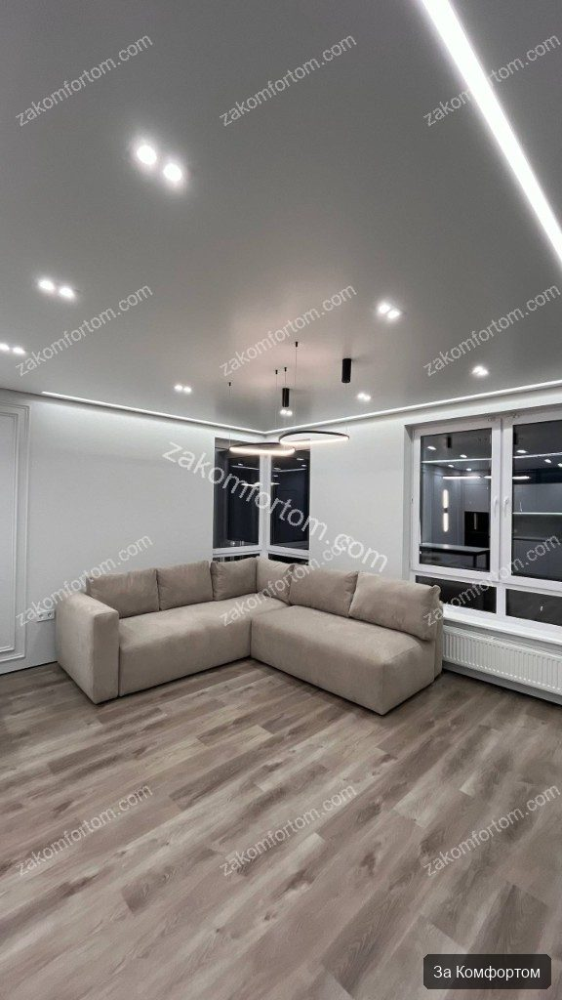
ЖК Тау Хаус 2
Паспорт объекта
Площадь: 73,13 м² · Тип: 3-комнатная квартира · Формат: Дизайн + ремонт под ключ · Сегмент: Комфорт
Адрес: Уфа, ул. Энтузиастов, 7
Запрос заказчика
Заказчик хотел светлую квартиру для семьи: спокойная палитра, функциональная кухня-столовая и гостиная, уютные спальни и детские с характером, но без перегруза. Важно было заранее согласовать отделку, встроенную мебель и освещение по проекту и получить ремонт под ключ без сюрпризов на финале.
План и описание объекта
Выполнены демонтажные работы, замена электрики и сантехники, выравнивание оснований и чистовая отделка по дизайн-проекту. В гостиной — ТВ-зона с подсветкой и молдинги, в кухне — рифлёные фасады и мраморный фартук, в санузлах — крупноформатная плитка и встроенная мебель, в детских — авторские фотообои и LED-подсветка. Квартира передана в состоянии, готовом к проживанию.
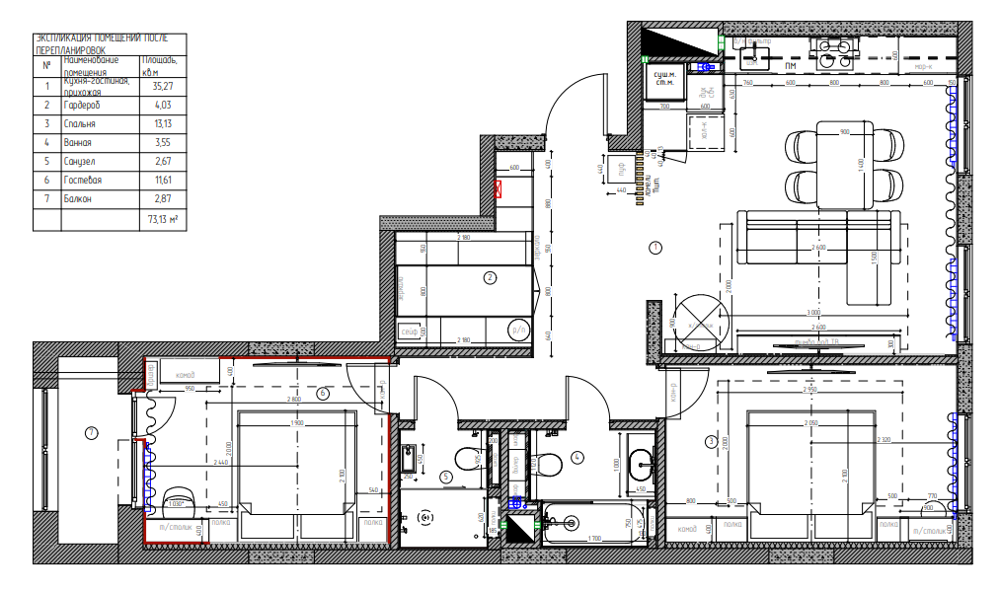
Краткий список работ
- Демонтаж старых покрытий и подготовка оснований
- Полная замена электрики и сантехники
- Штукатурка и выравнивание стен, подготовка под финишную отделку
- Устройство стяжки и выравнивание пола
- Монтаж стеновых молдингов и декоративных панелей
- Чистовая отделка: плитка, ламинат/паркет, покраска стен и фотообои
- Монтаж натяжных потолков, трекового и точечного света, LED-подсветки
- Изготовление и монтаж встроенной мебели (кухня, шкафы, ТВ-зона)
- Установка скрытых и межкомнатных дверей, плинтусов
- Монтаж кухонного фартука, сантехники и бытовой техники
- Установка розеток, выключателей и финальная уборка
Проект и реализация
- Светлая современная классика с молдингами и рифлёной мебелью
- Многоуровневое освещение и ТВ-зона с подсветкой
- Детские комнаты с фотообоями и продуманным светом
- Санузлы с крупноформатной плиткой и встроенной мебелью
- Квартира передана готовой к проживанию
Галерея
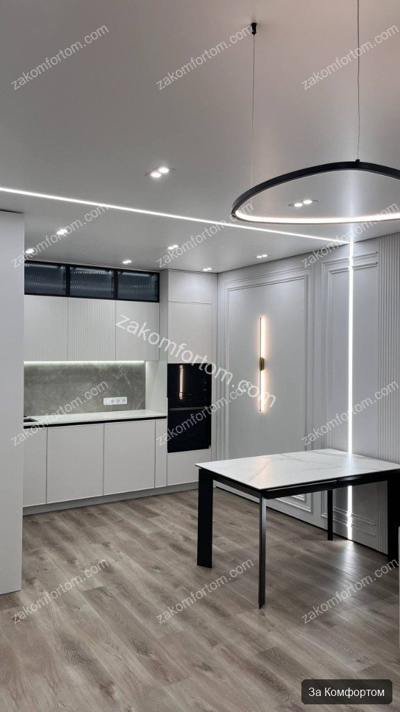
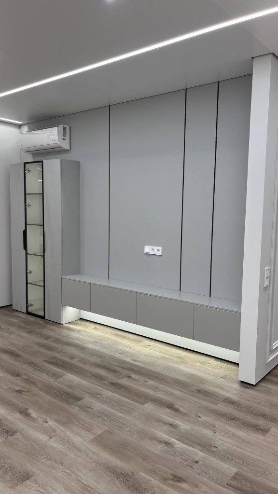
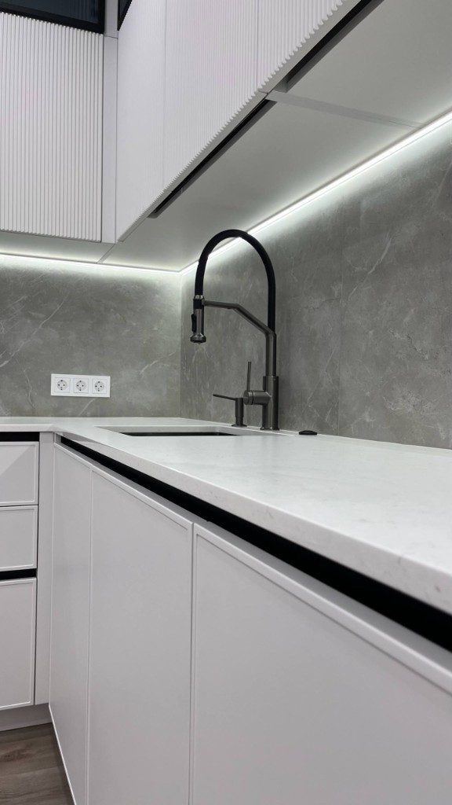
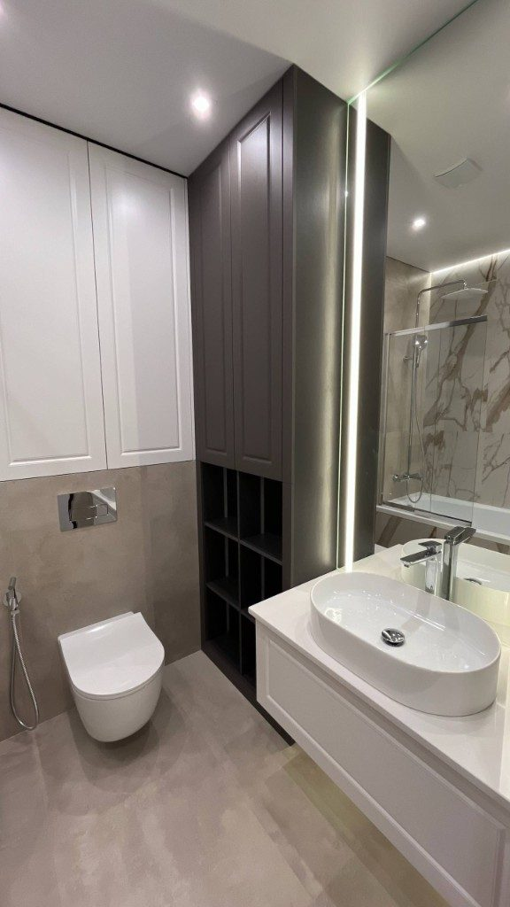
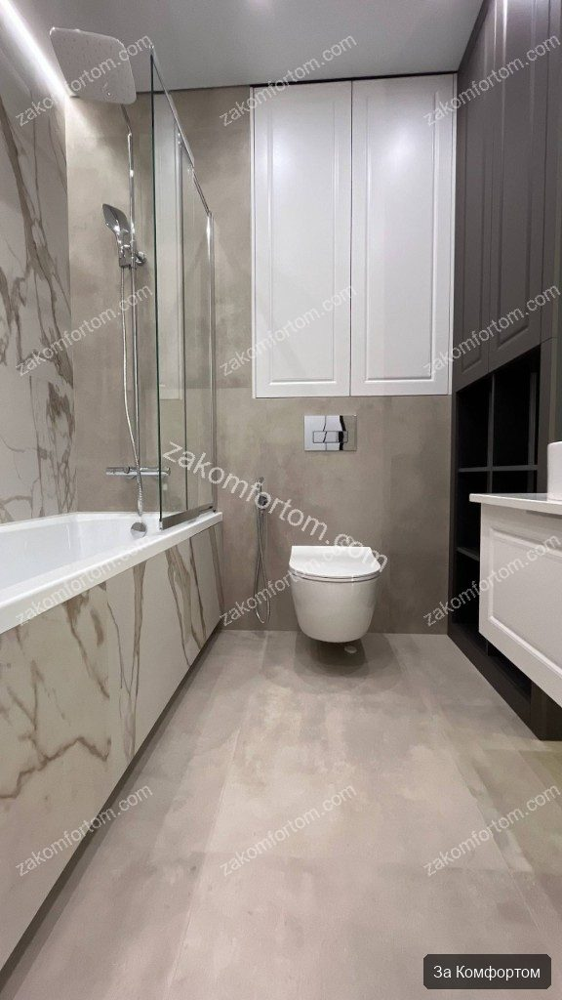
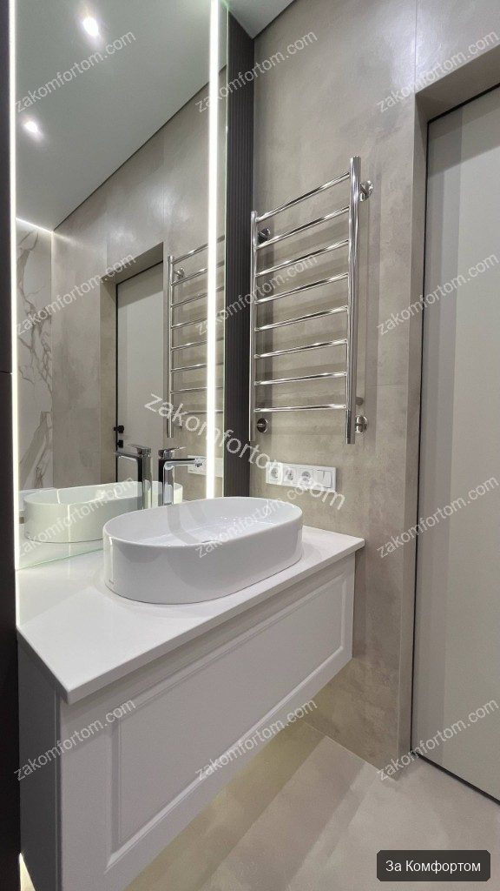
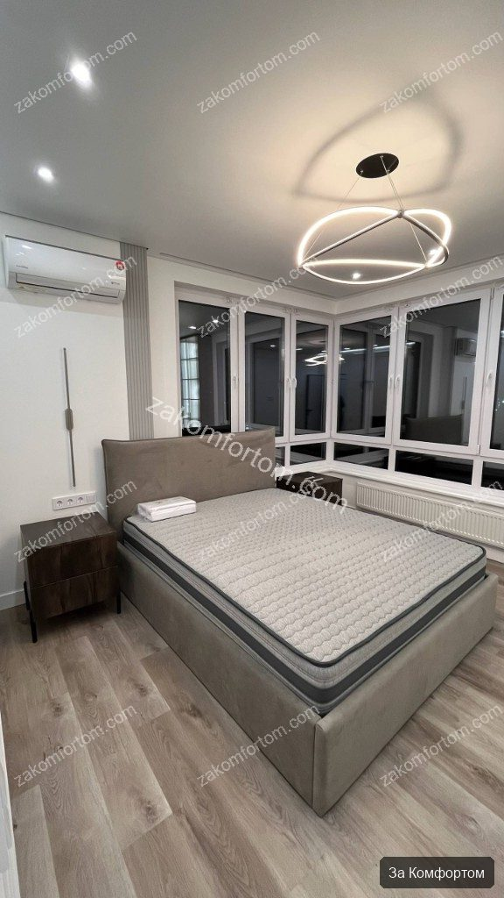
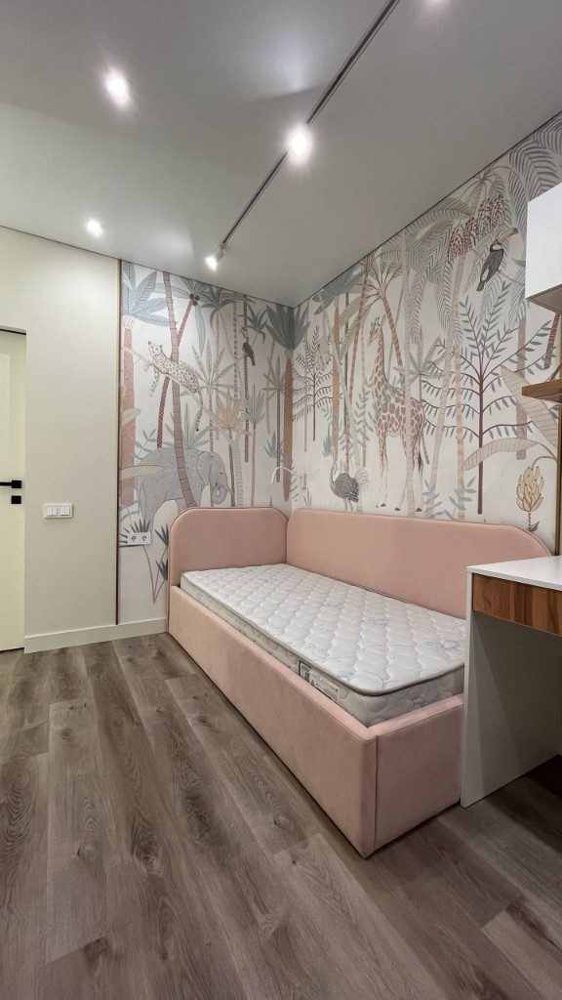
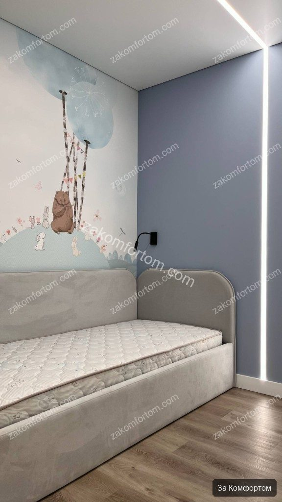
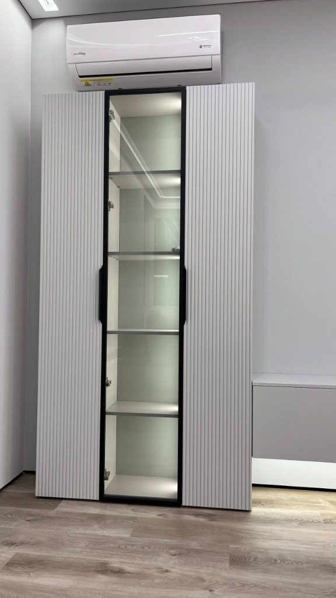
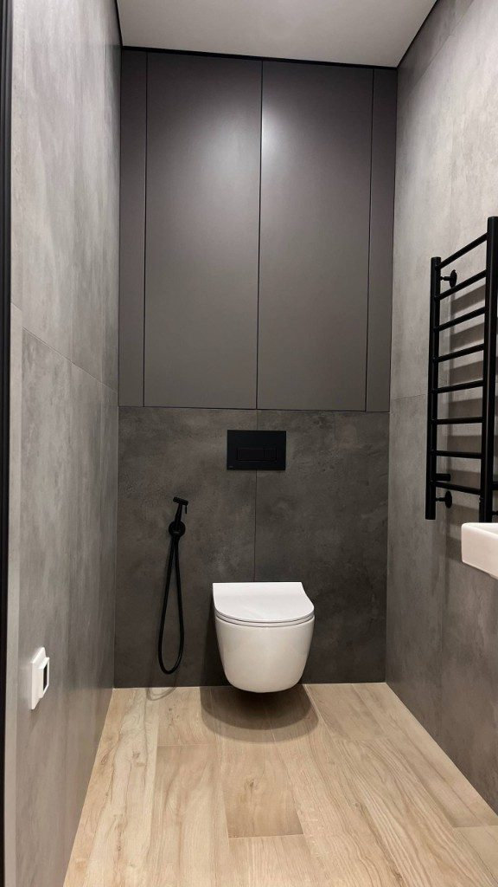
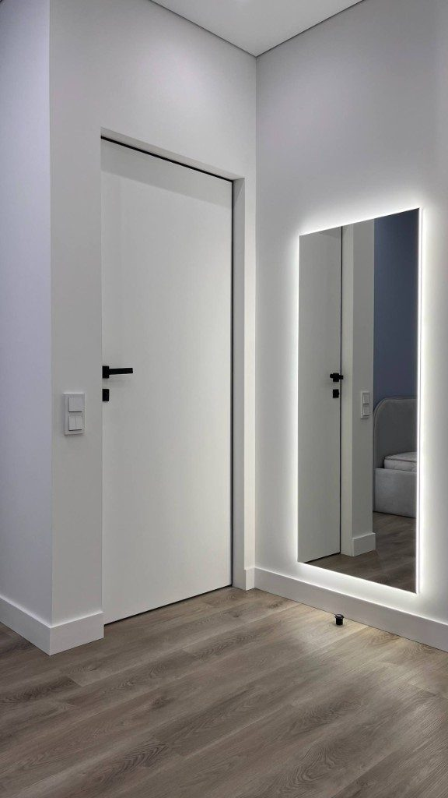
Фото до ремонта
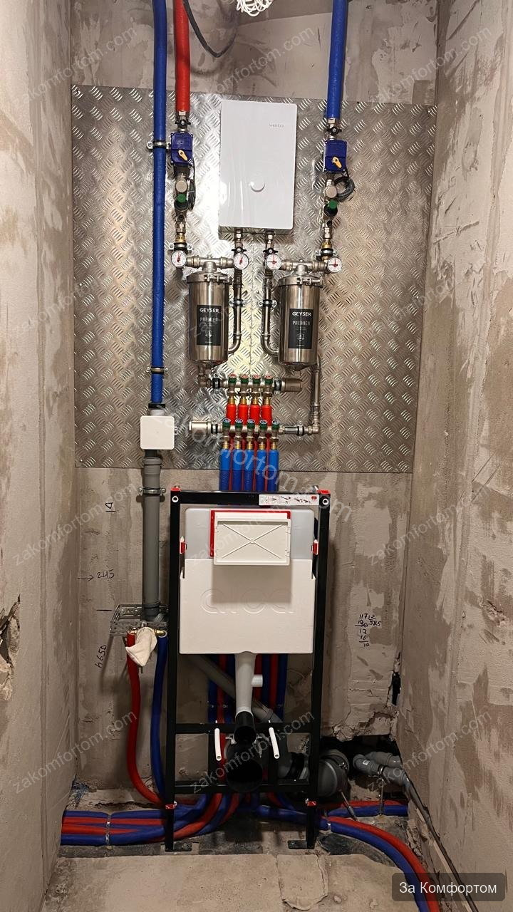
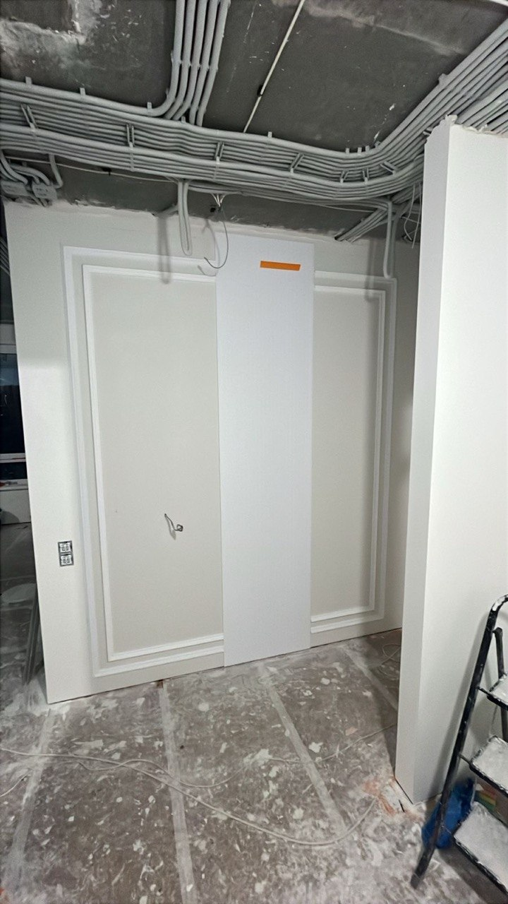
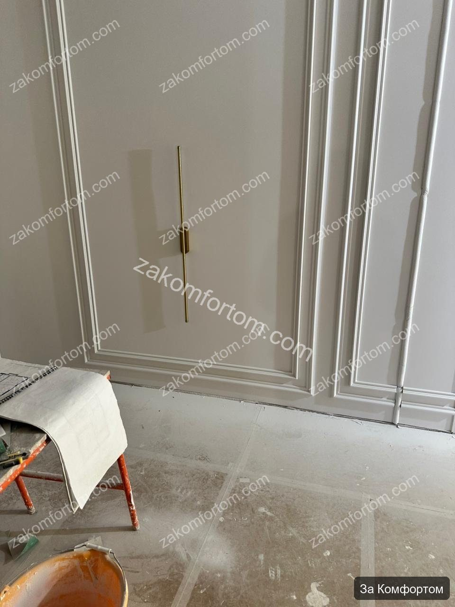
Видео с комментариями эксперта
Если узнаёте себя
- Семья с детьми — нужны и взрослые зоны, и детские с характером, но без кислотных цветов
- Важны молдинги, свет и встроенная мебель — без хаоса из разных бригад
- Хотите светлую квартиру, где санузлы и кухня так же продуманы, как гостиная
- Ищете подрядчика по живым объектам в новостройках Уфы